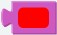
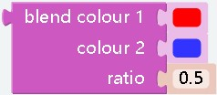

Colour¶
Prologue¶
Colour can only be used with some special modules, such as rgb
modules
¶
effect： Variable for outputting a colorm,computer-based color
¶
effect： Variable for outputting a colorm,Based on the colors that the rgb module can output
 ¶
¶
effect： The color is composed of three colors of r, g, and b according to a certain ratio. This block can read the ratio of r, g, and b of the color value
 ¶
¶
effect： Get random colors
 ¶
¶
effect： Create a color according to the custom r, g, b ratio
parameter： The rgb value of ezblock is different from the normal rgb value. Normally, it is 0~255, but the chromaticity in ezblock is 0~100 (this is also the range of the parameter)
¶
effect： You can mix two colors in a certain ratio
parameter： The parameter can only be a decimal (fraction) less than 1, which will be allocated to
colour2and the rest will be allocated tocolour1. For example, if the parameter is 0.4, then the colors will be mixed in the ratio ofcolour10.6,colour20.4